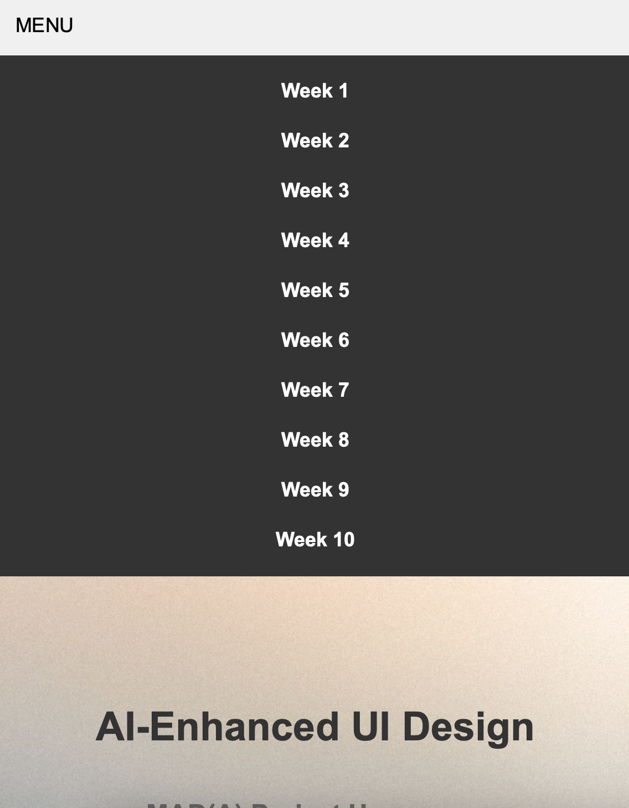

For the final version of the website, I am planning on adding Java Script elements like a “Hamburger” menu, some animations, etc. My current coding skills did not really help me in making these possible. However, I believe that by the end of semester 2, I will be able to make this possible.
Here are screenshots of my first attempt at creating a hamburger menu in a specific style that works well with my design:
